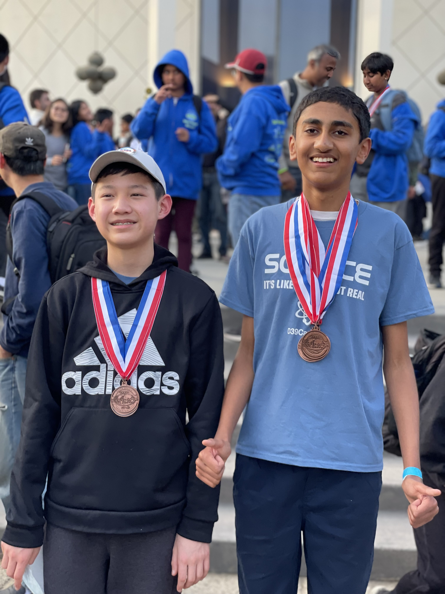
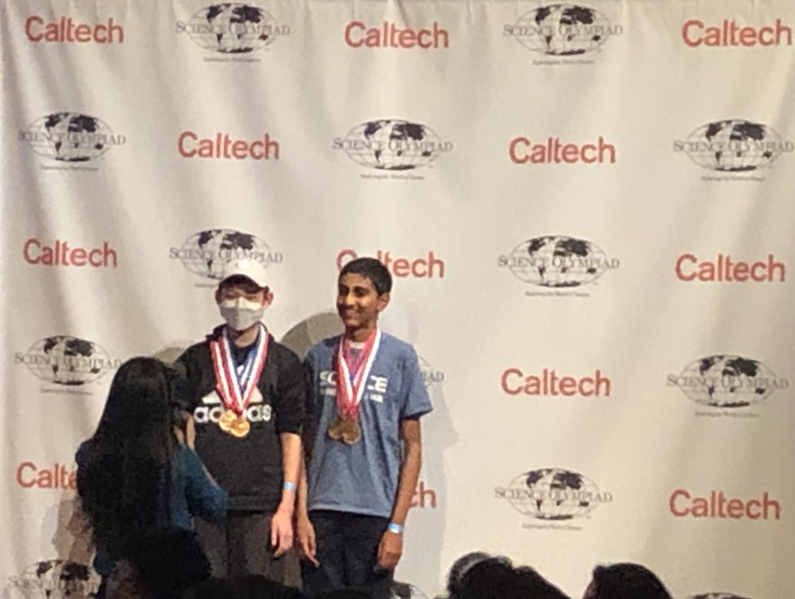

Project NexTech Executive Committee Member
2025 – Present · Part of the executive committee helping manage a 400-member student-led international STEM organization that has taught 1,800+ students across 18 countries.
Portfolio
I'm Ishan Jha, known online as Jupiterian. I'm a high school student focused on computer science, CyberPatriot, and real-world data projects—from cybersecurity hardening to ATP tennis ranking analytics and applied ML research.
Leadership
I enjoy combining technical work with education and community building, especially when it helps other students discover cybersecurity, programming, and emerging areas of technology.
2025 – Present · Part of the executive committee helping manage a 400-member student-led international STEM organization that has taught 1,800+ students across 18 countries.
Competitions
2023 – Present · CyberAegis Team
2022 – 2024


Featured build
A Python and FastAPI project for exploring 50+ years of ATP singles rankings, with a SQLite database, web UI, REST API, CLI tools, and MCP support for AI assistants.
Selected work
A Python and FastAPI project for exploring ATP singles rankings through a SQLite-backed web app, REST API, CLI utilities, and MCP server.
More about this project →A multimodal machine learning project combining brain MRI imaging with language analysis to evaluate dementia risk and support early screening workflows.
More about this project →See more work on my GitHub repositories.
Contact
If you want to ask about my projects, share ideas, or collaborate, the easiest way to reach me is through GitHub or Devpost.